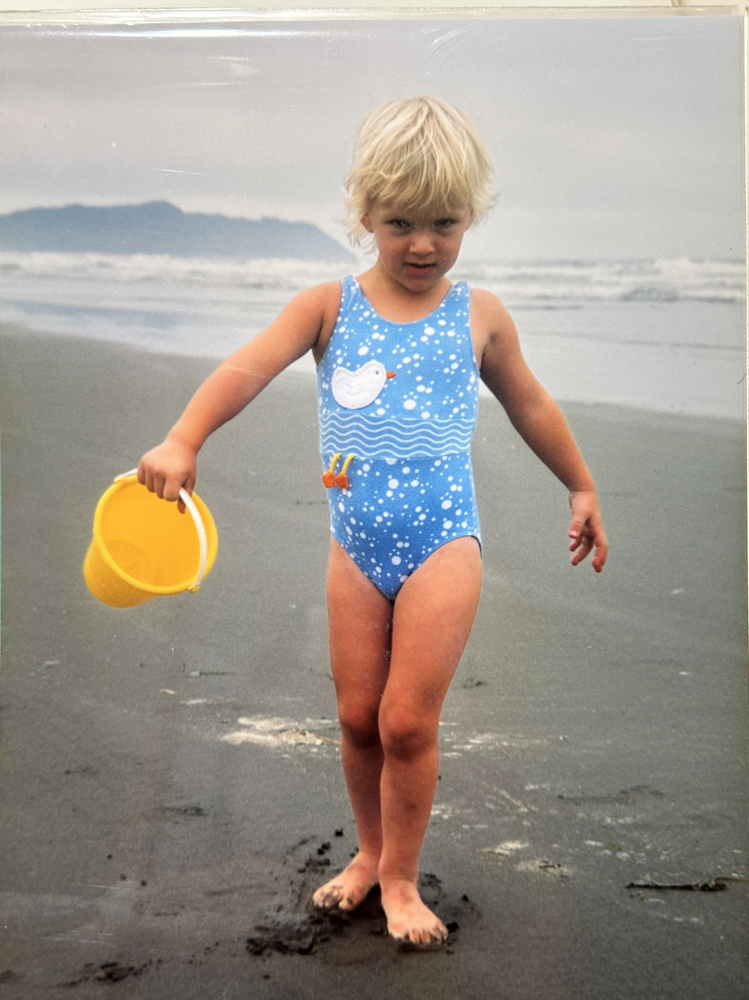
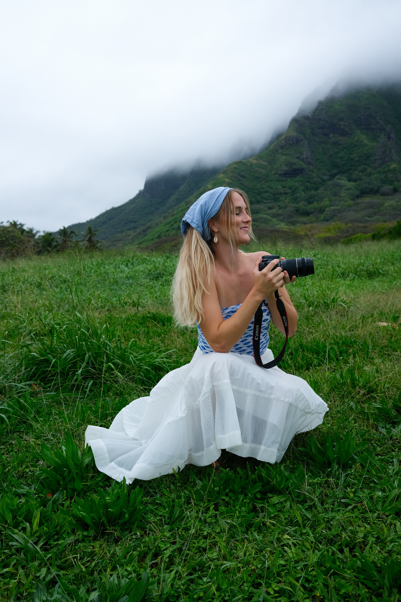
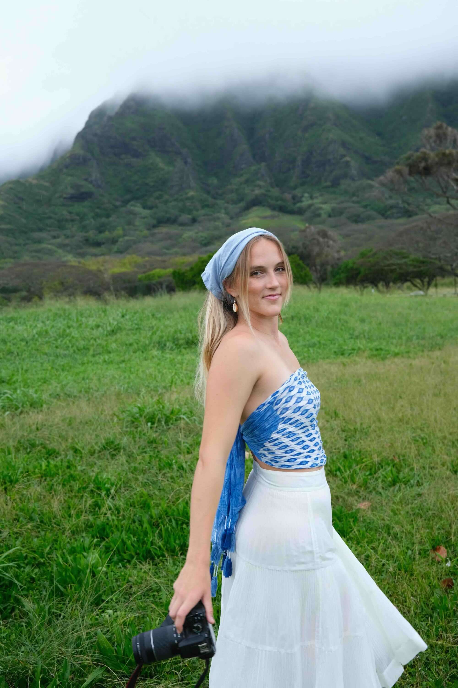
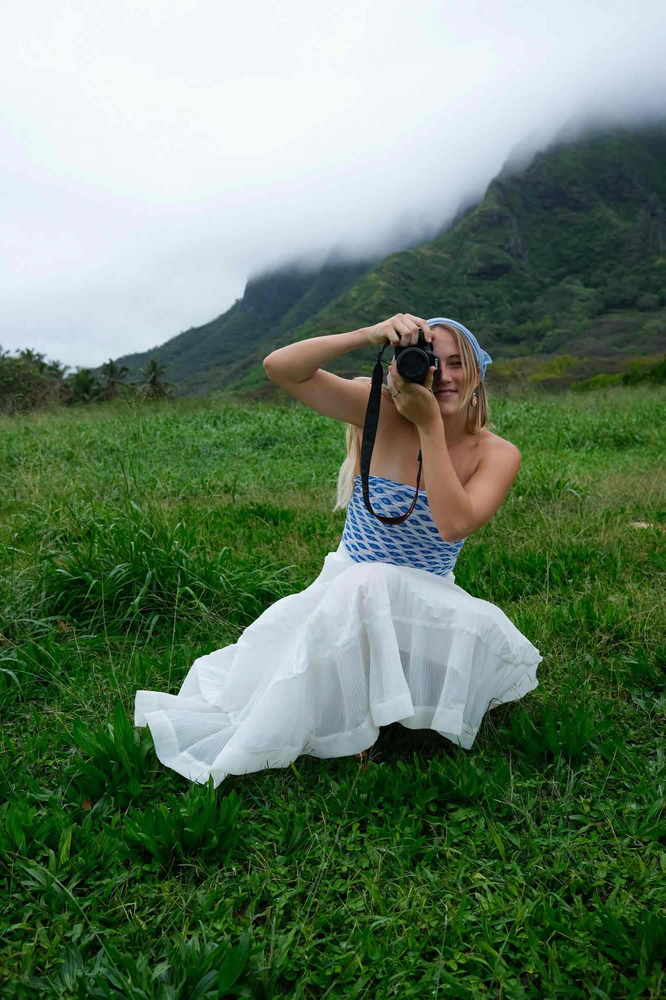
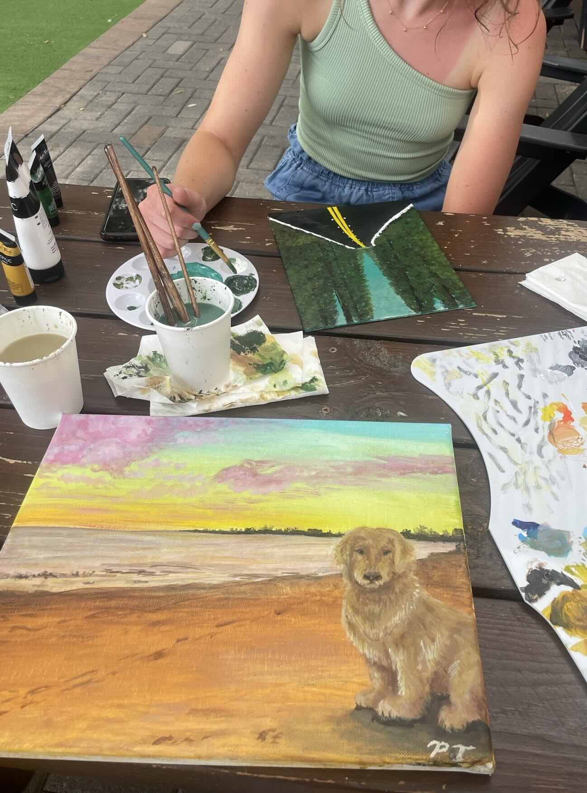
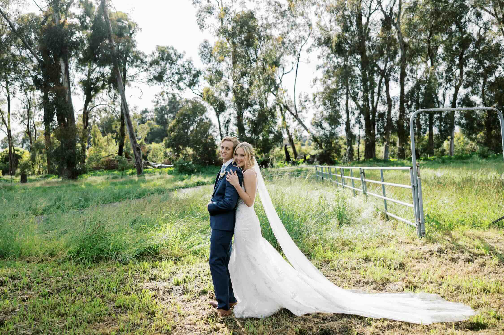
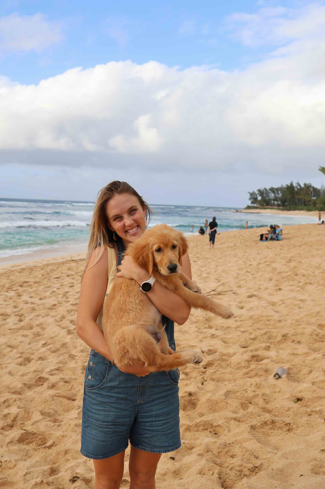

Born in California



Hi, I'm Paige! My love for people runs deep, and photography is the way I get to celebrate that every single day. I’m a couples and family photographer based on Oahu, Hawaii (originally from California!), and nothing brings me more joy than capturing people exactly as they are!
Faith is at the heart of how I show love to those around me. I truly believe every season of life deserves to be remembered, whether it’s a couple soaking up their engagement, a growing family chasing little ones through the sand, or a maternity session full of anticipation and joy. Getting to capture each little moment is something I never take for granted.
I’ve been drawn to art for as long as I can remember. Growing up, I almost always had a sketchbook nearby and a disposable camera with me at all times. I loved documenting life even back then—and that passion sticks with me today. Over time, photography became the perfect way for me to blend creativity with my love for connection.
Living on Oahu constantly inspires me. It's God's constant reminder that he loves us- and how cool that I get to look at it every day!
When I’m not behind the camera, you’ll probably find me at the beach or on a hike with my little family—my husband (a helicopter pilot!) and our golden retriever, Rotor. We love surfing, hiking, taking long walks in the botanical garden, and exploring new restaurants.
I’m based on Oahu but always happy to travel for sessions. If you're looking for someone to capture your love, your family, or this season of life you never want to forget, I’d be honored to tell your story.

Born in California

Grew up taking photos and drawing
Played soccer in college

Met my husband at school
Moved to Hawaii

Got a puppy named Rotor